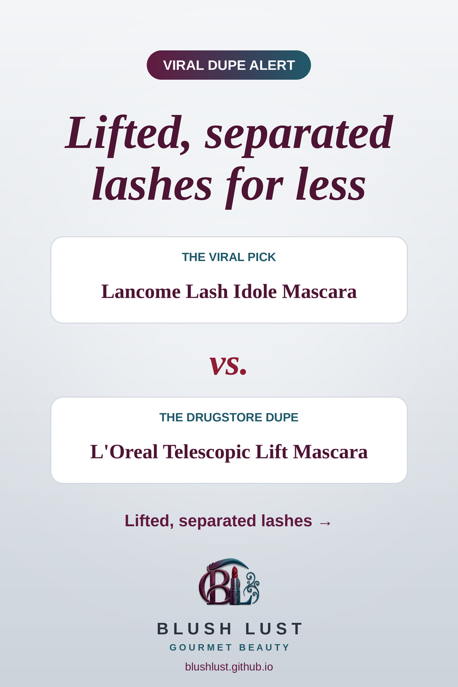

The lifting mascara, for less
Lifts, lengthens and separates without clumping. The L'Oreal formula is a popular budget pick.
This post contains affiliate links. If you buy through them, we may earn a small commission at no extra cost to you. As an Amazon Associate I earn from qualifying purchases.
L'Oreal Telescopic Lift Mascara
The viral pickLancome Lash Idole Mascara
vs.
The dupeL'Oreal Telescopic Lift Mascara

See today’s price on Amazon.ca →
Comparisons reflect what beauty shoppers commonly say, not lab testing. Shades and formulas vary — check reviews before you buy.
More lashes dupes
Featured in: Gifts for the Lash Obsessed: 8 Viral Eye Dupes Under $15 →